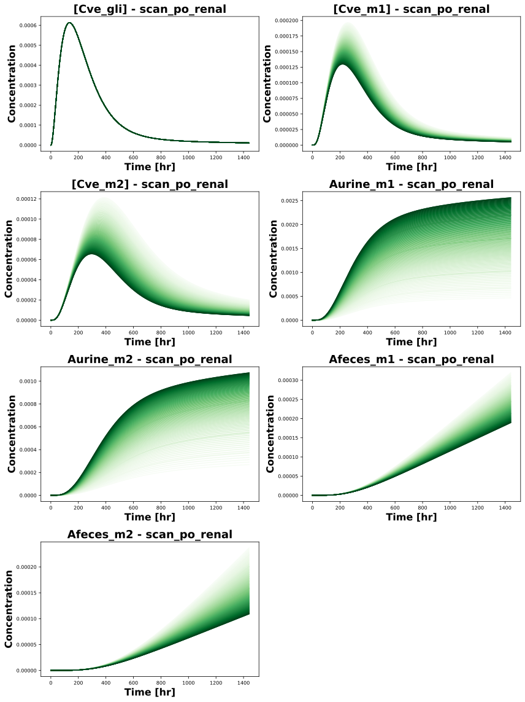
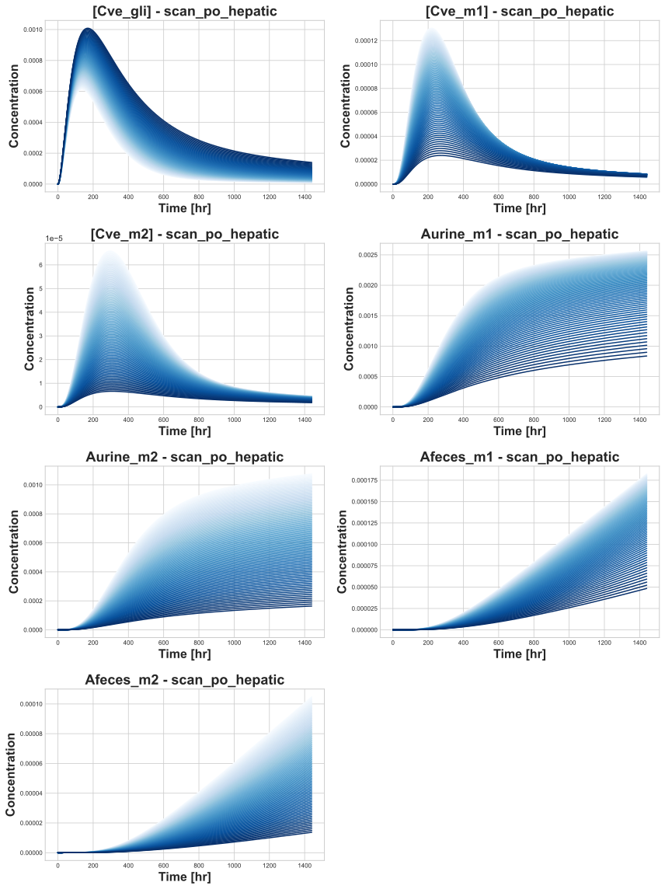
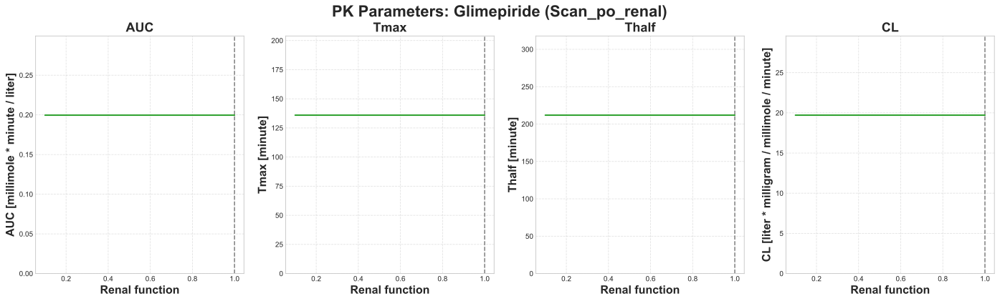
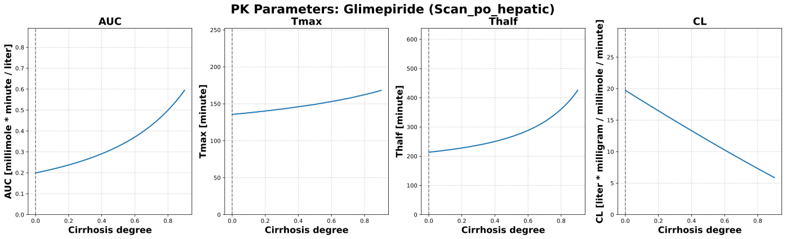

|  |
|  |
|  |
|  |
../../../../experiments/scans/scan_parameters.py
"""Parameter scans for glimepiride (renal function and cirrhosis)."""
from typing import Dict
import numpy as np
from sbmlsim.simulation import Timecourse, TimecourseSim, ScanSim, Dimension
from sbmlsim.plot.serialization_matplotlib import FigureMPL, plt
from pkdb_models.models.glimepiride.experiments.base_experiment import GlimepirideSimulationExperiment
from pkdb_models.models.glimepiride.helpers import run_experiments
from pkdb_models.models.glimepiride.glimepiride_pk import calculate_glimepiride_pk
class GlimepirideParameterScan(GlimepirideSimulationExperiment):
"""Scans the effect of renal function and cirrhosis on glimepiride pharmacokinetics."""
# Number of points in each scan
num_points = 100
# Defines parameter scans for 'renal_scan' and 'hepatic_scan'
scan_map = {
"renal_scan": {
"parameter": "KI__f_renal_function",
"default": 1.0,
"range": np.sort(np.append(np.linspace(0.1, 1.0, num=num_points - 5),
[0.15, 0.25, 0.5, 0.75, 1.0])), # ESRD to normal renal function
"scale": "linear",
"colormap": "Greens",
"units": "dimensionless",
"label": "Renal function",
},
"hepatic_scan": {
"parameter": "f_cirrhosis",
"default": 0.0,
"range": np.linspace(0, 0.9, num=num_points), # Normal to severe hepatic impairment
"scale": "linear",
"colormap": "Blues",
"units": "dimensionless",
"label": "Cirrhosis degree",
},
}
def simulations(self) -> Dict[str, ScanSim]:
"""Create scan simulations for renal and hepatic scenarios."""
Q_ = self.Q_
tcscans = {}
# Renal scenario
renal_data = self.scan_map["renal_scan"]
tcscans["scan_po_renal"] = ScanSim(
simulation=TimecourseSim(
Timecourse(
start=0,
end= 24 * 60,
steps=5000,
changes={
**self.default_changes(),
"PODOSE_gli": Q_(4, "mg"),
"KI__f_renal_function": Q_(1.0, "dimensionless"),
"f_cirrhosis": Q_(0.0, "dimensionless"),
},
)
),
dimensions=[
Dimension(
"dim_scan",
changes={
renal_data["parameter"]: Q_(
renal_data["range"],
renal_data["units"]
)
},
)
],
)
# Hepatic scenario
hepatic_data = self.scan_map["hepatic_scan"]
tcscans["scan_po_hepatic"] = ScanSim(
simulation=TimecourseSim(
Timecourse(
start=0,
end= 24 * 60,
steps=5000,
changes={
**self.default_changes(),
"PODOSE_gli": Q_(4, "mg"),
"KI__f_renal_function": Q_(1.0, "dimensionless"),
"f_cirrhosis": Q_(0.0, "dimensionless"),
},
)
),
dimensions=[
Dimension(
"dim_scan",
changes={
hepatic_data["parameter"]: Q_(
hepatic_data["range"],
hepatic_data["units"]
)
},
)
],
)
return tcscans
def figures_mpl(self) -> Dict[str, FigureMPL]:
"""Generate plots for timecourses and PK parameters."""
# Calculate PK parameters for each scenario
self.pk_dfs = self.calculate_glimepiride_pk()
return {
**self.figures_mpl_timecourses(),
**self.figures_mpl_pharmacokinetics(),
}
def figures_mpl_timecourses(self) -> Dict[str, FigureMPL]:
"""Visualize timecourse data for renal and hepatic scans."""
sids = [
"[Cve_gli]",
"[Cve_m1]",
"[Cve_m2]",
"Aurine_m1",
"Aurine_m2",
"Afeces_m1",
"Afeces_m2",
]
figures = {}
scenario_keys = {
"scan_po_renal": self.scan_map["renal_scan"],
"scan_po_hepatic": self.scan_map["hepatic_scan"],
}
for scenario_key, scan_data in scenario_keys.items():
cmap = plt.get_cmap(scan_data["colormap"])
range_values = scan_data["range"]
rmin, rmax = range_values[0], range_values[-1]
xres = self.results[f"task_{scenario_key}"]
time_data = xres.dim_mean("time").magnitude
# Subplots
num_rows = int(np.ceil(len(sids) / 2))
f, axes = plt.subplots(
nrows=num_rows,
ncols=2,
figsize=(12, 4 * num_rows),
dpi=150,
)
axes = axes.flatten()
for row, sid in enumerate(sids):
ax = axes[row]
for idx, value in enumerate(range_values):
# Calculate color based on parameter value
if scan_data["scale"] == "linear":
c = (value - rmin) / (rmax - rmin)
else: # "log"
c = (np.log10(value) - np.log10(rmin)) / (np.log10(rmax) - np.log10(rmin))
color = cmap(c)
concentration_data = xres[sid].sel({"dim_scan": idx}).values
ax.plot(time_data, concentration_data, color=color)
ax.set_title(f"{sid} - {scenario_key}", fontsize=18, fontweight="bold")
ax.set_xlabel("Time [hr]", fontsize=16, fontweight='bold')
ax.set_ylabel("Concentration", fontsize=16, fontweight="bold")
ax.tick_params(axis="both", labelsize=8)
# Remove unused subplots
for idx in range(len(sids), len(axes)):
f.delaxes(axes[idx])
f.tight_layout()
plt.subplots_adjust(hspace=0.3, wspace=0.2)
figures[f"timecourse_{scenario_key}"] = f
return figures
def figures_mpl_pharmacokinetics(self) -> Dict[str, FigureMPL]:
"""Plot PK parameters vs scanned values."""
pk_parameters = {
"glimepiride": ["auc", "tmax", "thalf","cl"],
}
figures = {}
scenario_keys = {
"scan_po_renal": self.scan_map["renal_scan"],
"scan_po_hepatic": self.scan_map["hepatic_scan"],
}
for substance, parameters in pk_parameters.items():
for scenario_key, scan_data in scenario_keys.items():
f, axes = plt.subplots(
nrows=1,
ncols=len(parameters),
figsize=(6 * len(parameters), 6),
dpi=300,
)
f.suptitle(f"PK Parameters: {substance.capitalize()} ({scenario_key.capitalize()})", fontsize=22, fontweight='bold')
axes = axes.flatten()
df = self.pk_dfs[f"task_{scenario_key}"]
df_sub = df[df.substance == substance]
if df_sub.empty:
continue
for col, pk_param in enumerate(parameters):
ax = axes[col]
ax.axvline(x=scan_data["default"], color="grey", linestyle="--")
param_values = df_sub[pk_param].values
# Get unit label
unit_col = f"{pk_param}_unit"
unit = df_sub[unit_col].iloc[0] if unit_col in df_sub.columns and not df_sub[unit_col].empty else ""
# Set color based on scenario
color = "tab:green" if scenario_key == "scan_po_renal" else "tab:blue"
ax.plot(
scan_data["range"],
param_values,
label=substance,
color=color,
linewidth=2,
)
# Disable scientific notation on y-axis
ax.ticklabel_format(style='plain', axis='y')
# Set y-axis limits
max_val = param_values.max() if param_values.size > 0 else 1
ax.set_ylim(bottom=0, top=max_val * 1.5)
# Format parameter name for title/label
formatted_pk = pk_param.upper() if pk_param.lower() in ['auc', 'cl'] else pk_param.capitalize()
# Set subplot title and labels
ax.set_title(formatted_pk, fontsize=18, fontweight='bold')
ax.set_ylabel(f"{formatted_pk} [{unit}]", fontsize=16, fontweight='bold')
ax.set_xlabel(f"{scan_data['label']}", fontsize=16, fontweight='bold')
# Add grid
ax.grid(True, linestyle='--', alpha=0.6)
if len(pk_parameters) > 1:
ax.legend()
figures[f"pk_{substance}_{scenario_key}"] = f
return figures
def calculate_glimepiride_pk(self):
"""Calculate PK parameters for each scenario."""
pk_dfs = {}
for sim_key, results in self.results.items():
pk_dfs[sim_key] = calculate_glimepiride_pk(self, results)
return pk_dfs
if __name__ == "__main__":
run_experiments(GlimepirideParameterScan, output_dir="GlimepirideParameterScan")
{kind=link}
{kind=link}
{kind=link}
{kind=link}